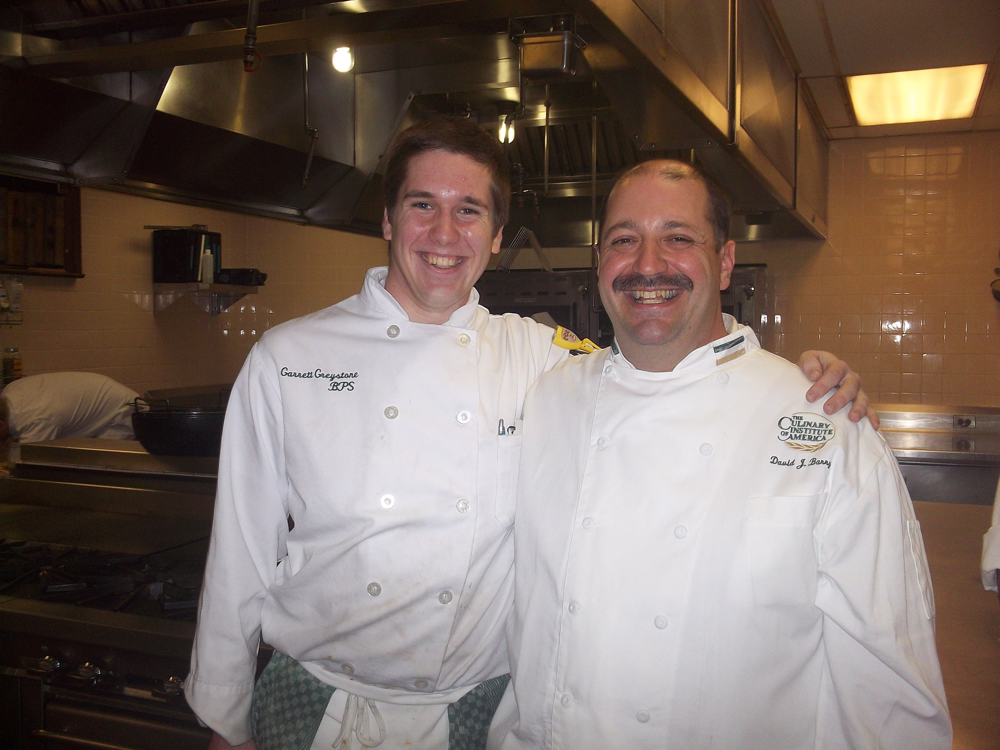

I am a chef with around 10 years of experience in the culinary field, currently I have stepped out of the kitchen realm and started working at Farm House Coffee Roasters. At the roastery I am responsible for making our nitro cold brew, packaging the bags of coffee for retail sale and working a few farmers markets. A few other jobs that I have held were working at the University of Maine Catering department, working as a line cook at one of the season ticket holder restaurants at Fenway park, and running the kitchen and catering department of the Coffee Cann Cafe in Lawrence Massachusetts.
What had originally gotten me int the culinary field was my love for cooking at home, when it came time for me to go to high school I decided to attend Whittier Vocational Technical High School. During my freshman year there I had to go through all of the 50 or so different shops they had, by the end of the year I decided that I liked the culinary feild the best. Over the next three years at the high school I helped cater many events, served tables in our functioning restaurant as well as prepare the meals and desserts for it. By my junior year I had to start thinking about colleges, I looked at many Culinary schools but at the end I decided to attend the Culinary Institute of America. I spent about a year and a half at the CIA and honestly loved it, everything about it was specialized for the culinary field, and it had no filler classes such as public speaking, or art. So I could get my degree faster and be better prepared for my future jobs, and not just be "well rounded" for the because somebody wanted more money.I eventually dropped out of the CIA for personal reasons, sometimes to this day that still haunts me but I feel as though I have bounced back because from that low point I worked my way up to running a kitchen and catering program at a local cafe and landed a job at a very unique segment of the culinary field, making coffee.
Hobbies Drawings Dishes